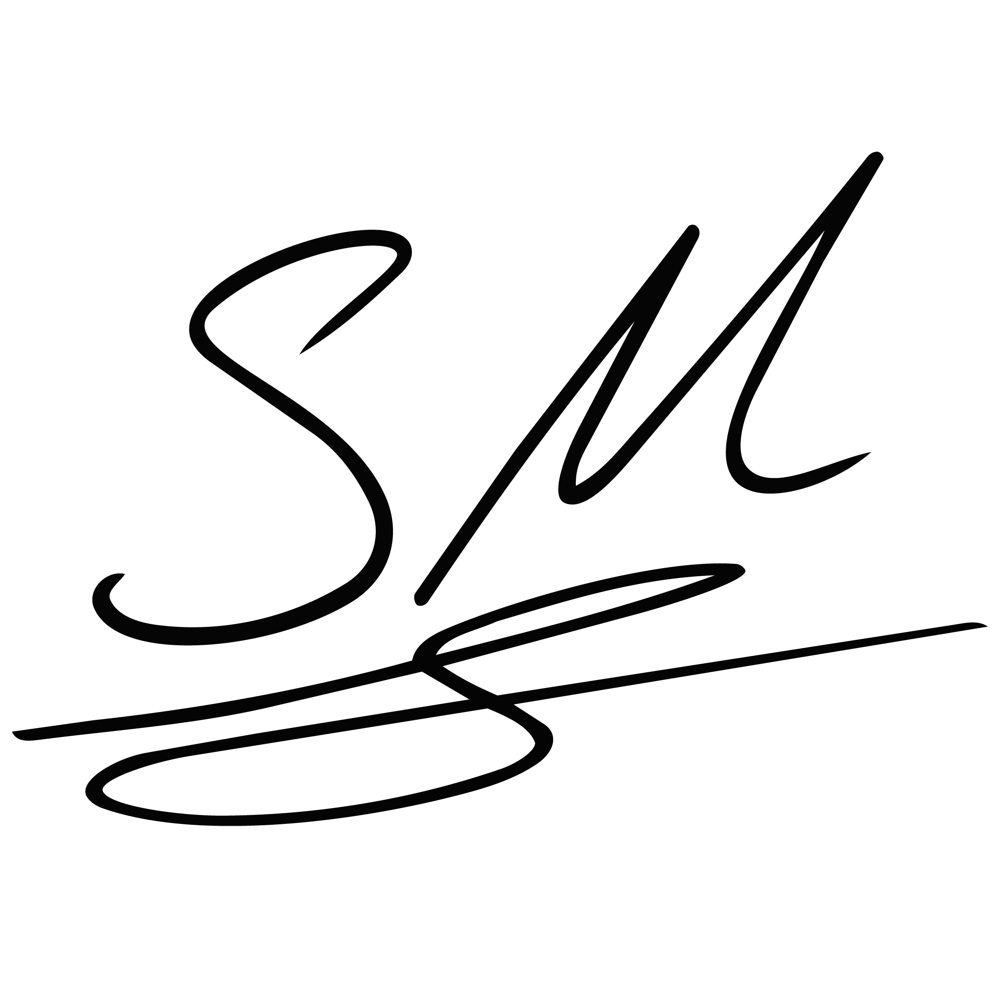
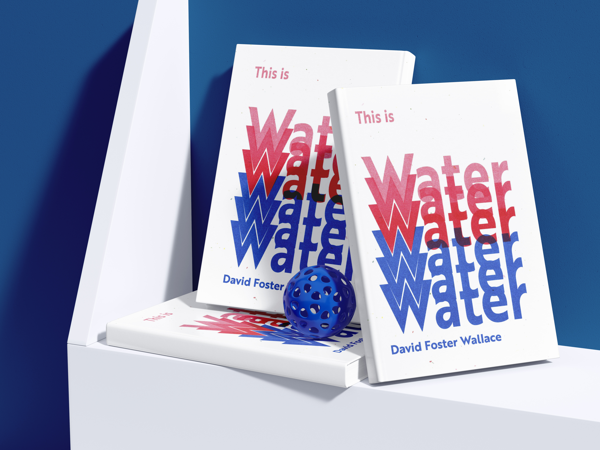
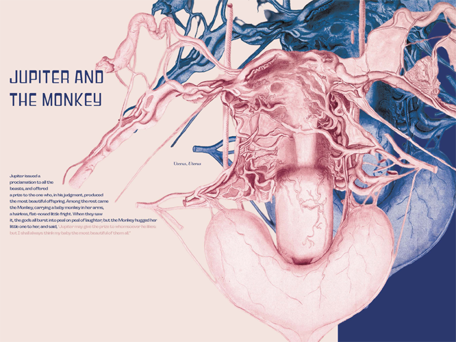
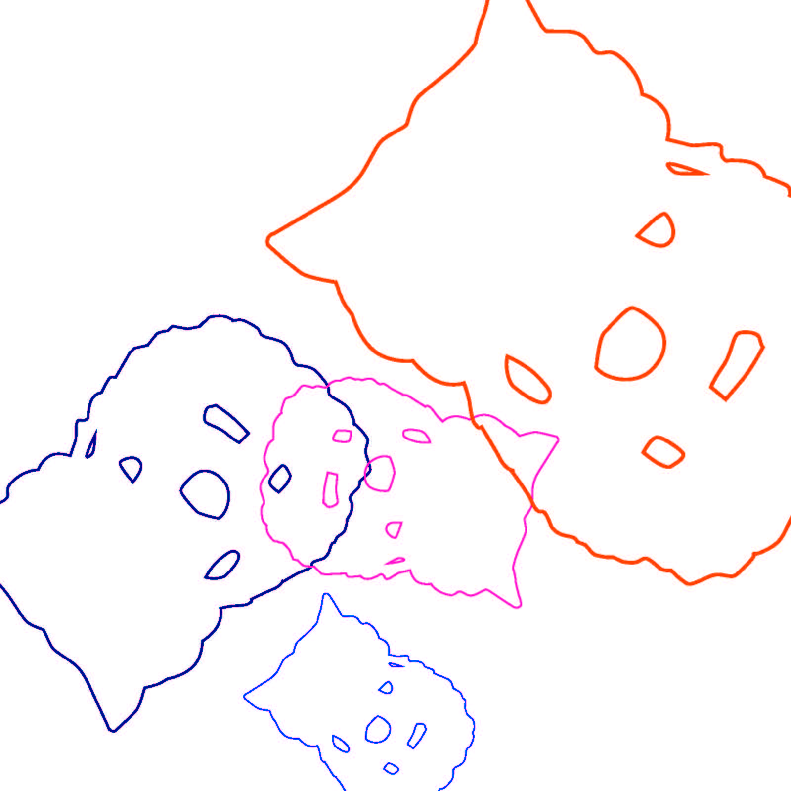

Description of Project 3

Worked in a classroom with 18 people working in different roles to complete this book based on fables and the theme we selected is anatomy. My role was to create four different spreads with the fable selected for me, then illustrate them with imagery from an anatomy textbook. My role was to also create the cross stitching animals and two organs for the book. I created my own cross stitch pattern for the animals and worked with another student to create the organs.

I was tasked to create a book based on the theme of square reduction. My role was to design the layout and create illustrations that would represent the concept of reducing shapes to their most basic forms. We picked an object form our home and I choose my ceramic owl for this project.

Download Square Reduction (PDF)